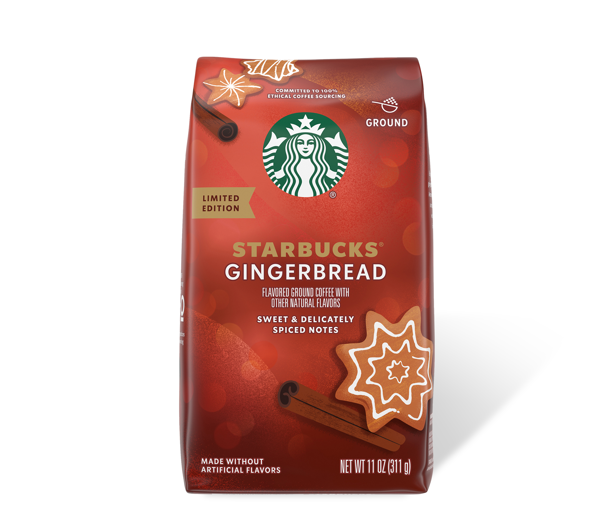
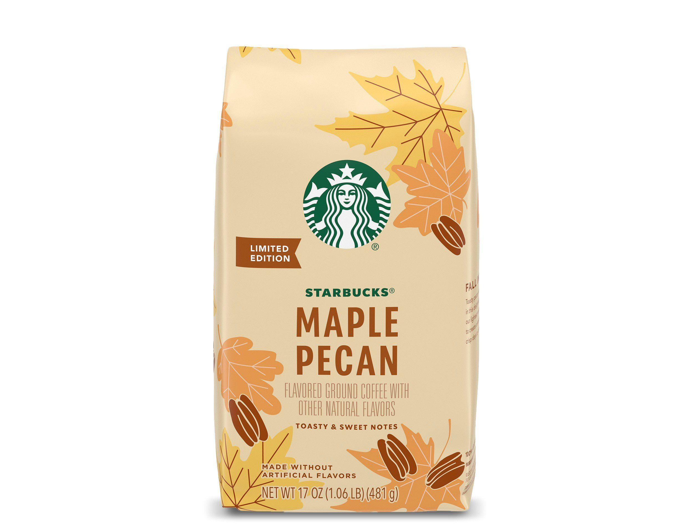
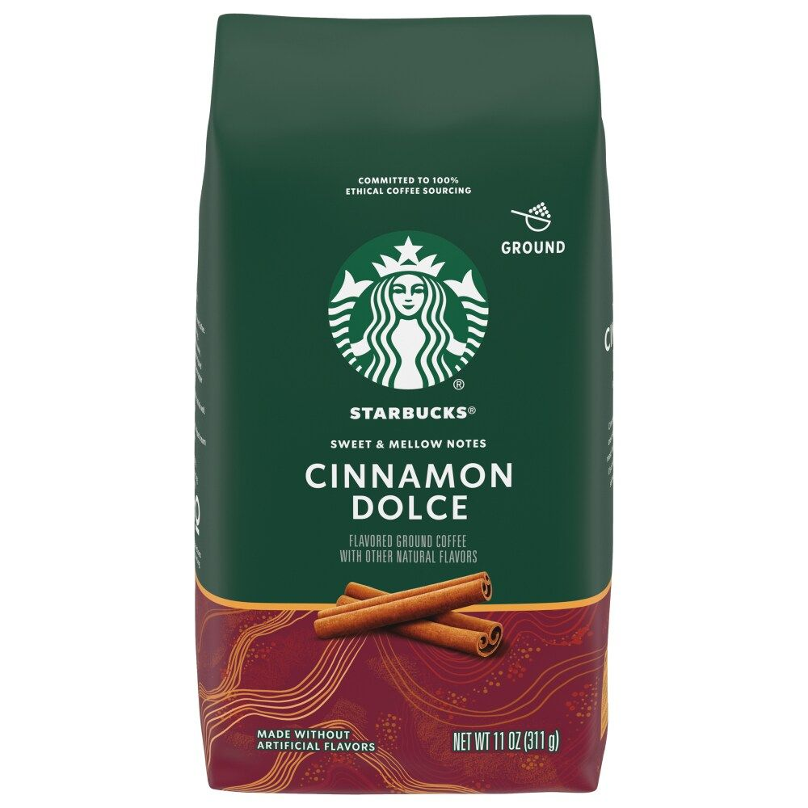

Starbucks Holiday Blend
El café Starbucks Holiday Blend
tiene un sabor elegante con notas de arce dulce y hierbas,
equilibrado con una acidez y cuerpo medios. Dulce y en capas,
cada sorbo celebra la alegría de la temporada con esta mezcla
de brillantes cafés latinoamericanos y suaves de Indonesia.

Starbucks Maple Pecan 481gr
Ingredientes Café 100% Arábica Características del producto Explore todo
el otoño con el café con sabor a nuez de arce de Starbucks, una mezcla de nuestro tueste más
ligero y los sabores de otoño perfectos.

Starbucks Cinnamon Dolce
Las notas de canela y azúcar moreno se complementan con nuestro tueste
más ligero. Hecho sin sabores artificiales, es una taza suave con una suavidad maravillosa
para endulzar su día. El empaque Starbucks FlavorLock garantiza el sabor fresco de nuestros
cafés.